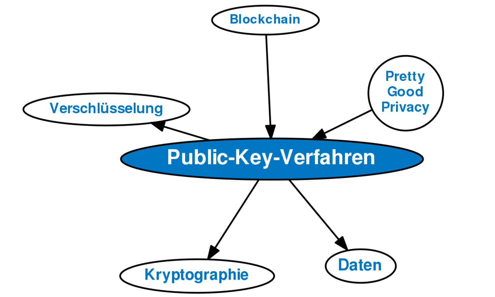

Public-/ und Private Key Verfahren
Asymmetrisches Verfahren zur Verschlüsselung von Daten mithilfe eines öffentlichen und eines geheimen Zifferncodes (Key).
Die übertragenen Daten werden mit dem öffentlichen Key verschlüsselt und können nur von dem rechtmäßigen Empfänger,
der den geheimen Key besitzt, entschlüsselt werden

Hier geht es weiter zur Anleitung:
Wie man in Kryptowährungen investiert
Einzelnachweise
1.
Public-Key-Verfahren
In: wirtschaftslexikon.gabler.de. Abgerufen am 16.01.2022.